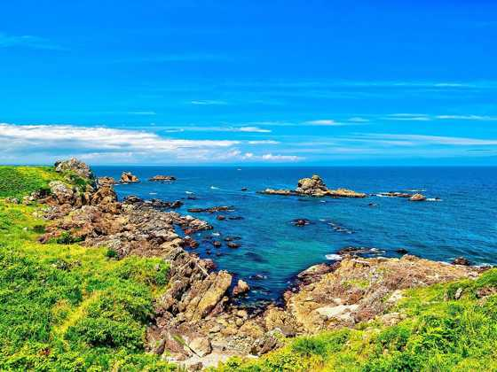
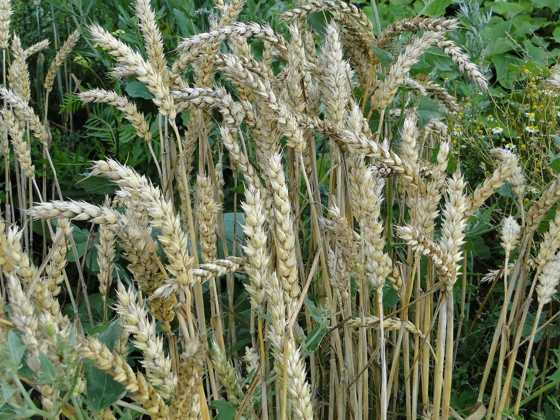
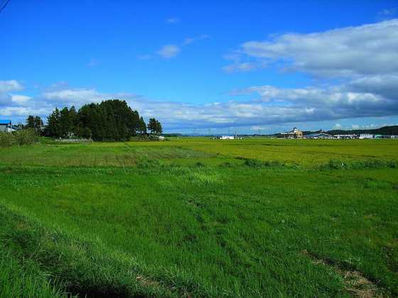
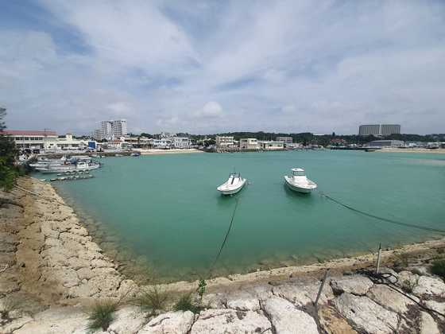
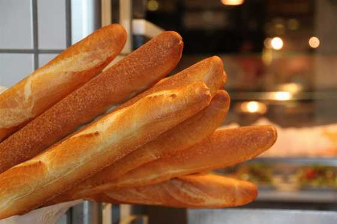
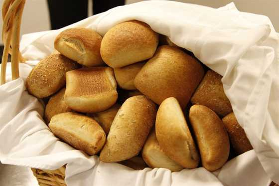
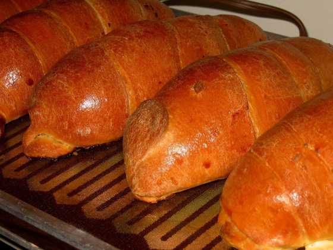
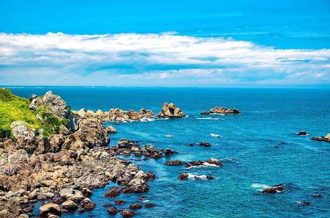
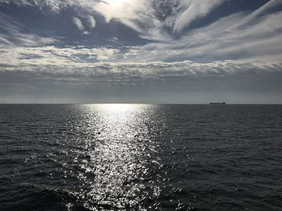
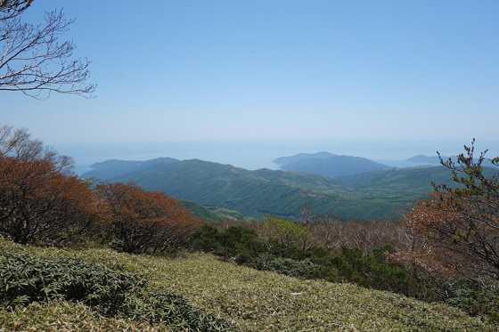

三日月Bakery
国産小麦に、能登の酒粕・醤油・いしりを重ねて。
夜空にそっと浮かぶ三日月のように、静かに笑顔が広がるパンを。
石川県鳳珠郡能登町崎山3丁目6

お店の由来・想い
三日月Bakeryは、2023年10月17日に能登町崎山でオープンしたパン屋さんです。「笑顔が広がるようなパン作り」を大切にしているとのことです(能登町公式観光ガイドの紹介による)。
国産小麦100%を使い、酒粕、醤油、いしりなど、地域の良いものを取り入れたパンを焼いています。
※店名「三日月」の由来は確認できていません。ページ上の月のモチーフや「夜空」の表現は、制作側のイメージです。



メニュー・提供内容
個別の商品名・価格は確認できていないため準備中です。以下は確認できた店の特徴です。
国産小麦100%
パンづくりには国産小麦だけを使っているとのことです。
酒粕・醤油・いしり
能登ならではの発酵の恵みを取り入れたパンを焼いています。
売り切れ次第終了
店内に席はなく、お持ち帰り中心のお店です。





商品名・価格: 準備中
口コミ(イメージ例)
小麦の香りがしっかりして、素朴でやさしい味でした。また買いに行きたいです。(創作の例文)
地元のものを使っていると聞いて、ひとつずつ選ぶのが楽しくなりました。(創作の例文)
お散歩のついでに立ち寄って、焼きたてを持ち帰りました。(創作の例文)
上記は実在のお客様の声ではなく、制作側が作成したイメージ例です。



アクセス・お店の情報
- 住所
- 〒927-0434 石川県鳳珠郡能登町崎山3丁目6
- 電話
- 準備中
- 営業時間
- 準備中(観光ガイドには10時から18時、売り切れ次第閉店との掲載あり。最新はInstagramでご確認ください)
- 定休日
- 準備中(観光ガイドには月曜・木曜との掲載あり)
- 駐車場
- 準備中(観光ガイドには2台分との掲載あり)
- @mikatsuki_v
写真クレジット
掲載写真はWikimedia Commons等で公開されているフリー素材です。縮小・切り抜きなどの加工をしています。ライセンスの詳細は creativecommons.org をご覧ください。使用した全12点を記載します。
- images/coast-1.jpg 「葦毛崎展望台20200724-P1100614.jpg」 くろふね / CC BY 4.0
- images/coast-2.jpg 「葦毛崎展望台20200724-P1100603.jpg」 くろふね / CC BY 4.0
- images/ariake-sea.jpg 「Ariake_Sea_from_Ariake_Ferry.jpg」 そらみみ / CC BY-SA 4.0
- images/ria-goyo.jpg 「石楠花荘からのリアス式海岸.jpg」 Koda6029 / CC BY-SA 4.0
- images/p01-bread.jpg 「Two_loaves_of_rustic_sourdough_bread.jpg」 Nadav Spiegelman / CC BY-SA 4.0
- images/p06-rolls.jpg 「Cachitos_close-up_(3175160347).jpg」 Wladimir Labeikovsky / CC BY-SA 2.0
- images/bread-rounds.jpg 「Sour_dough_bread_from_Jexhof,_Bavaria_01.jpg」 Kritzolina / CC BY-SA 4.0
- images/baguette.jpg 「Baguette-246424.jpg」 cocoparisienne / CC0 1.0
- images/bread-basket.jpg 「Basket_of_rolls.jpg」 Daniel Sone / パブリックドメイン
- images/wheat.jpg 「Wheat_stalks.jpg」 Quer / CC0 1.0
- images/harbor.jpg 「Maeganeku_fishing_port_8.jpg」 Syced / CC0 1.0
- images/p05-field.jpg 「Kurikomainayashiki2005-9.jpg」 作者不詳 / パブリックドメイン